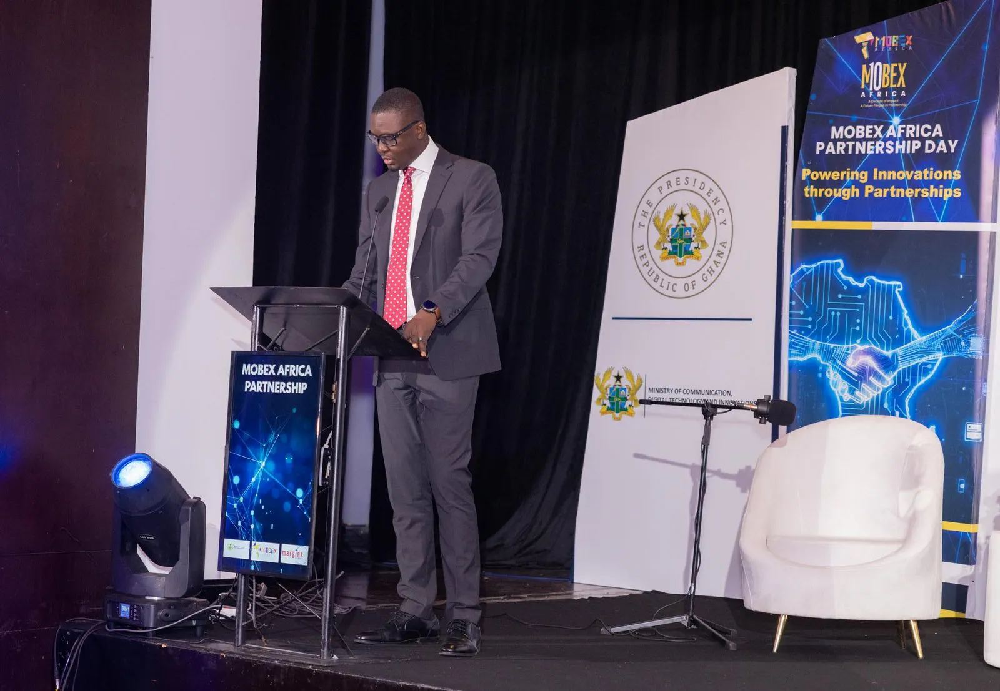

Conferences · Tech
MOBEX Africa
- Dates
- Dates TBA
- Venue
- Accra (2027 venue not announced)
- Location
- Accra, Ghana
- Format
- In-person
- Category
- Tech
- Industry
- Technology conference and expo
- Organiser
- MOBEX Africa
- Official website
- https://mobexafrica.org/
About
Official site (fetched 24 Nov 2026) describes MOBEX Africa as a Pan-African digital-transformation platform that still hosts an annual flagship event, and highlights MOBEX Africa Tech Expo & Innovation Conference 2025. Impact counters are unfilled zeros. No official 2026 or 2027 flagship dates or venue. Ghana dates are local (Greenwich Mean Time, GMT, Africa/Accra, UTC+0, no daylight saving).
Topics: digital transformation, startups, innovation policy.
No organiser attendance figure found on the official pages checked (24 Nov 2026). Ranked by an estimated size tier 'medium' (our judgement from format, venue and scale, not an official number).
Sources
- Official — https://mobexafrica.org/